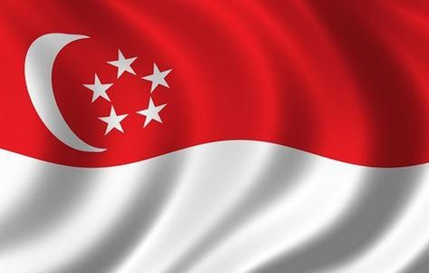

Pendidikan adalah fondasi utama dalam pembangunan suatu bangsa. Sebagai proses yang mengembangkan kemampuan intelektual, moral, dan sosial individu, pendidikan menjadi elemen kunci untuk menciptakan masyarakat yang lebih berdaya saing, inklusif, dan berkeadilan. Pendidikan tidak hanya memberi bekal keterampilan dasar seperti membaca, menulis, dan berhitung, tetapi juga membentuk karakter, meningkatkan wawasan, dan membangun kesadaran kritis individu terhadap dunia yang terus berubah. Oleh karena itu, pendidikan memiliki peran strategis dalam menjawab tantangan global sekaligus menciptakan peluang untuk kemajuan yang berkelanjutan. Komitmen terhadap pendidikan berkualitas tercermin dalam Sustainable Development Goals (SDGs) yang dicanangkan oleh PBB. Pada Tujuan Ke-4 SDGs, pendidikan menjadi prioritas dengan tujuan utama memastikan akses pendidikan yang inklusif, adil, dan berkualitas bagi semua, sekaligus membuka kesempatan pembelajaran sepanjang hayat tanpa memandang latar belakang sosial, ekonomi, atau geografis. Pendidikan yang berkualitas bukan hanya sekadar membawa anak-anak ke sekolah, tetapi juga menjamin bahwa mereka mendapatkan pembelajaran yang relevan, kontekstual, dan mampu mendorong potensi mereka secara maksimal. Pendidikan yang berkualitas ini bertujuan untuk mempersiapkan generasi muda menghadapi tantangan masa depan, baik di tingkat lokal, nasional, maupun global.
Namun, dalam implementasinya, masih terdapat banyak tantangan yang menghambat tercapainya pendidikan berkualitas, khususnya di negara-negara berkembang seperti Indonesia. Salah satu tantangan utama yang dihadapi Indonesia adalah kesenjangan akses pendidikan. Meskipun sudah banyak kebijakan dan program yang dirancang untuk meningkatkan akses pendidikan, ketimpangan masih terlihat jelas, terutama di daerah terpencil, pedesaan, dan wilayah tertinggal. Di daerah-daerah tersebut, infrastruktur pendidikan sering kali minim, baik dari segi fasilitas fisik seperti gedung sekolah dan laboratorium, maupun sarana pendukung seperti buku, alat tulis, dan akses teknologi pendidikan. Anak-anak di wilayah ini sering kali harus menempuh jarak jauh untuk bersekolah, sementara kualitas pengajaran di sekolah yang tersedia juga masih jauh dari memadai.Selain kesenjangan akses, Indonesia juga menghadapi kekurangan tenaga pendidik yang terlatih dan kompeten. Guru, sebagai aktor utama dalam proses pendidikan, sering kali tidak mendapatkan pelatihan yang memadai untuk menghadapi perubahan kurikulum, kebutuhan teknologi, maupun tantangan dalam pembelajaran yang semakin kompleks. Hal ini berdampak pada kualitas pembelajaran di kelas, di mana banyak siswa tidak mendapatkan pengalaman belajar yang bermakna dan sesuai dengan kebutuhan zaman. Tantangan ini diperburuk oleh dampak pandemi COVID-19 yang melanda dunia pada tahun-tahun terakhir. Pandemi memaksa sistem pendidikan beradaptasi dengan pembelajaran jarak jauh (PJJ), yang pada praktiknya menghadirkan tantangan besar bagi banyak siswa dan guru di Indonesia. Keterbatasan akses internet, kurangnya perangkat digital, serta rendahnya literasi teknologi di kalangan siswa dan guru menjadi hambatan utama dalam penerapan PJJ. Akibatnya, angka putus sekolah meningkat, terutama di kalangan anak-anak dari keluarga kurang mampu, yang tidak dapat mengikuti pembelajaran secara optimal. Selain itu, kesenjangan pendidikan antara kelompok sosial-ekonomi yang berbeda semakin melebar, mengancam upaya untuk mencapai pemerataan pendidikan di seluruh wilayah Indonesia.
Untuk menjawab berbagai tantangan ini, kerjasama internasional menjadi solusi strategis yang sangat diperlukan. Melalui kolaborasi dengan negara-negara yang memiliki pengalaman dan keunggulan dalam sistem pendidikan, Indonesia dapat mempercepat transformasi sistem pendidikannya menuju standar global yang lebih baik. Salah satu mitra utama Indonesia dalam upaya ini adalah Singapura, negara yang dikenal dengan sistem pendidikan modern dan inovatif. Kerjasama bilateral antara Indonesia dan Singapura mencakup berbagai program strategis, mulai dari pelatihan guru, penguatan pendidikan vokasional, hingga pertukaran pelajar. Pelatihan guru bertujuan untuk meningkatkan kompetensi dan profesionalisme tenaga pendidik di Indonesia, sehingga mereka mampu menghadirkan pembelajaran yang lebih menarik, relevan, dan berbasis teknologi. Selain pelatihan guru, penguatan pendidikan vokasional menjadi salah satu fokus utama dalam kerjasama ini. Pendidikan vokasional memiliki peran penting dalam membekali siswa dengan keterampilan teknis yang relevan dengan kebutuhan dunia kerja. Dengan mengadopsi pendekatan pendidikan vokasional dari Singapura, Indonesia dapat memperkuat hubungan antara pendidikan dan industri, sehingga lulusan pendidikan vokasional lebih siap untuk memasuki pasar kerja. Sementara itu, program pertukaran pelajar memberikan kesempatan bagi siswa Indonesia untuk belajar langsung di Singapura, mengenal sistem pendidikan yang lebih maju, serta memperluas wawasan dan jejaring internasional mereka.Kerjasama ini tidak hanya terbatas pada hubungan bilateral, tetapi juga melibatkan kerjasama regional dan multilateral. Dalam konteks ASEAN, Indonesia dan Singapura bekerja sama untuk mendorong pengembangan pendidikan berbasis STEM (Science, Technology, Engineering, and Mathematics), yang sangat penting untuk mempersiapkan generasi muda menghadapi revolusi industri 4.0. Pendidikan berbasis STEM tidak hanya memperkuat kemampuan teknis siswa, tetapi juga mengasah kreativitas, pemecahan masalah, dan kemampuan berpikir kritis yang sangat dibutuhkan di era digital ini. Di tingkat global, Indonesia juga terlibat dalam berbagai inisiatif pendidikan yang diprakarsai oleh UNESCO dan PBB, seperti program pembelajaran digital dan akses pendidikan untuk semua.
Dampak positif dari kerjasama ini dirasakan tidak hanya pada sistem pendidikan itu sendiri, tetapi juga pada masyarakat secara keseluruhan. Dengan meningkatkan kualitas pendidikan, Indonesia dapat mengurangi kesenjangan sosial, mempercepat pembangunan ekonomi, serta meningkatkan daya saing bangsa di pasar global. Pendidikan berkualitas juga berkontribusi pada pemberdayaan individu, menciptakan masyarakat yang lebih kritis, inovatif, dan adaptif terhadap perubahan zaman.Lebih jauh, upaya ini sejalan dengan nilai-nilai luhur Pancasila yang menjadi landasan moral dan ideologis bangsa Indonesia. Prinsip kemanusiaan yang adil dan beradab, persatuan Indonesia, serta semangat gotong royong tercermin dalam kerjasama internasional yang bertujuan untuk memberikan manfaat bagi seluruh rakyat. Pendidikan yang inklusif dan berkualitas menjadi wujud nyata dari upaya untuk menciptakan masyarakat yang lebih sejahtera, adil, dan bermartabat.Melalui kerjasama yang berkelanjutan dengan Singapura dan mitra internasional lainnya, Indonesia dapat memperkuat fondasi pendidikan yang kokoh untuk masa depan. Dengan memanfaatkan inovasi, teknologi, dan praktik terbaik dari negara lain, Indonesia memiliki peluang besar untuk mentransformasi sistem pendidikannya menjadi lebih relevan, adaptif, dan berdaya saing. Investasi dalam pendidikan bukan hanya mencerminkan komitmen terhadap pembangunan manusia, tetapi juga langkah strategis untuk menciptakan generasi yang mampu membawa Indonesia ke tingkat yang lebih tinggi di kancah global. Dengan pendidikan yang berkualitas, masa depan yang cerah dan berkeadilan bukan lagi sekadar impian, tetapi sebuah harapan yang dapat diwujudkan.
diwujudkanberkualitas, masa depan yang cerah dan berkeadilan bukan lagi sekadar impian, tetapi sebuah harapan yang berkualitas, masa depan yang cerah dan berkeadilan bukan lagi sekadar impian, tetapi sebuah harapan yang dapat diwujudkan.